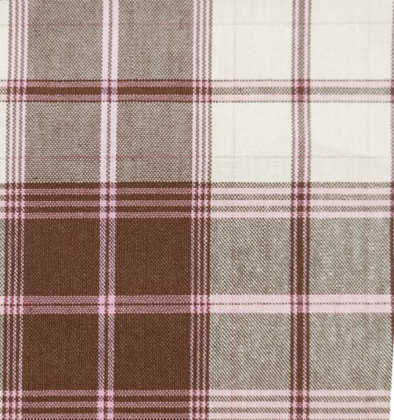
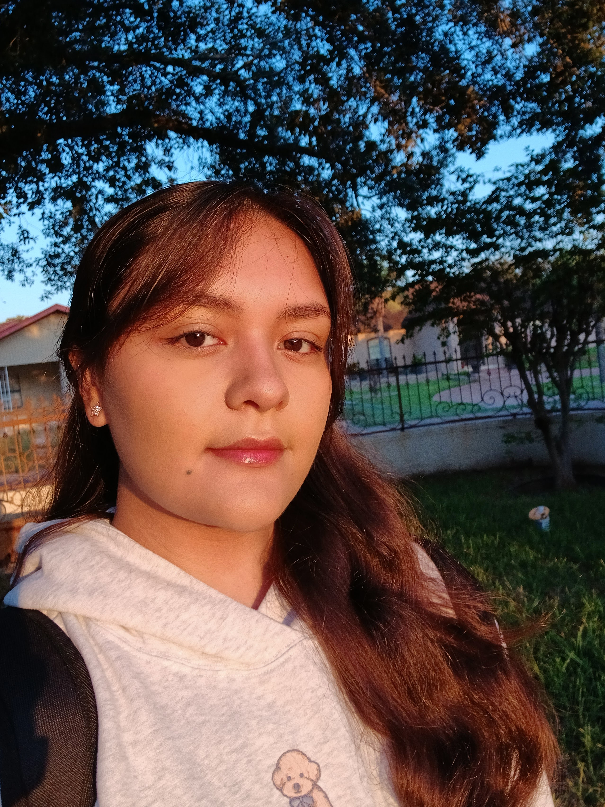

Some decorative gingham and me!
Hi, I'm Isabella Rios and I'm a McCombs student at UT Austin! Although my major is still undeclared, I'm interested in pursuing Marketing with a minor in Media and Entertainment or International Business. My hobbies consist of drawing, watching movies, cooking, and reading. I'm especially passionate about visual storytelling and hope to one day share meaningful stories through visual design.